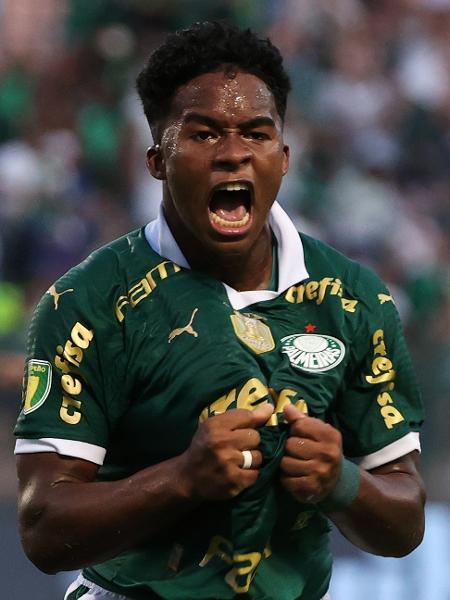

meu grande astro
endrick

Endrick Felipe Moreira, conhecido como Endrick, é um jovem futebolista brasileiro nascido em 21 de julho de 2006, em São Paulo, Brasil. Ele ganhou destaque como atacante promissor nas categorias de base do Palmeiras, clube onde iniciou sua carreira profissional. Endrick chamou a atenção por seu talento, habilidade e capacidade de finalização precoce, sendo comparado a alguns dos maiores jogadores do futebol brasileiro.
Sua ascensão nas divisões de base e no time profissional do Palmeiras fez com que clubes europeus começassem a monitorar seu progresso de perto. Em dezembro de 2022, ele assinou um contrato com o Real Madrid, um dos clubes mais prestigiados da Europa, embora ele não tenha se mudado para a Espanha imediatamente devido a regulamentos de transferências internacionais para jogadores menores de idade.
Endrick é visto como um dos maiores talentos da nova geração do futebol brasileiro e europeu, com expectativas de ter uma carreira brilhante pela frente.
Endrick Felipe Moreira, um dos jovens talentos mais promissores do futebol, é amplamente reconhecido por suas habilidades e características excepcionais. Ele se destaca principalmente por sua capacidade de finalização, mostrando precisão e potência em seus chutes que o tornam um atacante altamente eficiente. Sua habilidade técnica é notável, com controle de bola e dribles que lhe permitem superar defensores e criar oportunidades de gol com facilidade.
Além disso, Endrick combina velocidade e agilidade impressionantes, facilitando seu posicionamento rápido em campo e eficácia em contra-ataques. Sua visão de jogo e inteligência tática são evidentes, permitindo-lhe ler as jogadas e tomar decisões rápidas e acertadas. Apesar de ser um atacante, ele também contribui significativamente para o jogo coletivo, fazendo passes decisivos e participando ativamente da construção das jogadas.
A força física de Endrick, mesmo sendo jovem, ajuda-o a competir e enfrentar adversários em disputas intensas. Sua mentalidade competitiva e atitude profissional destacam-se, demonstrando maturidade e foco impressionantes para sua idade. Essas características fazem de Endrick um jogador não apenas promissor, mas também um futuro estrela do futebol, com potencial para brilhar tanto em clubes de alto nível quanto na seleção brasileira.